Analyzing official California Fire History data collected by government agencies dating back to the late 1800’s. This is done using the R programming language.
California has had our largest fires in recorded history the last 2 years. Fires have had an effect on everyone in California weather it be due to air quality, or loss of property and loved ones. One school morning I woke up to a sky full of dark smoke, the smoke was so bad I could barely see down the block. Since that day in Chico there have been multiple other instances where smoke has blanketed the skies of California and ash has fallen from the skies. Smoke over the horizon is a terrible feeling as life as you know it can rapidly change without there being anything you can do about it. As a data science student, we are often just on our computer but we are learning complex skills which we can apply to the real world to make a difference. This project is a great opportunity to spend our time helping in the effort to solve current real world problems.
I will be exploring this fire perimeter dataset to learn more about what measures cal fire is taking to combat fires. I would like to see if I can tell if any of these measures have been successful or unsuccessful. In addition I would like to see what is causing these fires in California. I would like to see just how many acres are burning and what areas have been affected the most.
My initial data science questions are
I am using the 2020 California Fire Perimeters data set available from gis.data.gov. A fire perimeter is the boundary of a fire measured by acres in this data set. This data set includes data from many different government agencies from different time periods. This data set includes prescribed burns and wildfire perimeters dating back to 1950 for CAL FIRE. Data from 2021 is not released until the fire season is over, which is on going at the time of this (Dec 18 2021). The United States Forest Service, USFS, has submitted records as far back as 1878 and the National Park Service, NPS, has submitted records from as far back as 1921. The types of fires included in this report has varied over the centuries which may add bias to the results. A couple important notes about the data is that from 1950 to 2001 it included USFS fires 10 acres and greater and CAL FIRE fires 300 acres and greater. BLM and NPS started inputting data since 2002 collecting fires 10 acres and greater. From 2002-2014 CAL FIRE expanded its criteria by including timber fires 10 acres or greater, brush fires 50 acres and greater, grass fires 300 acres and greater in size, wild land fires destroying 3 or more structures, and wild land fires causing 300,000 or more in damage. From 2014 and on the monetary requirement was dropped and the damage requirement is 3 or more habitable structures or commercial structures. In 1989 each unit was assigned to verify all 300 plus Acre fires from pre 1989 and as a result there is a statewide GIS layer from 1950-1999. Some errors that could occur when exploring this data is that duplicates may exist. For example, USFS and CAL FIRE could both capture the fire perimeter and submit it. In some cases they could even report different parameters of the same fire. While duplicate records is rare, there is an asterisk next to the cells that are the most accurate.
YEAR This set contains fire data from 1878 to 2020.STATE While this data set is from CALFIRE there is some data from Oregon, Nevada, and Arizona. This data reports fires that occurred in both states, it does not specify the origin.AGENCY Different services may respond to the fires depending on jurisdiction. These services provide data to Cal Fire as a courtesy Different values we may see are CDF for California Department of Forestry and Fire Protection (Cal Fire), United States Forest Service (USFS), Bureau of Land Management (BLM), National Park Service (NPS), Contract Country (CC), Other FED (Federal Fire Protection Agency).UNIT_ID This is a series of digits to uniquely identify what units are responding to the fire.FIRE_NAME Fires are often named for geographic location or nearby landmarks like roads, lakes, rivers, and mountains.INC_NUM Number assigned by thee Emergency Command Center of the responsible agency for the fire.ALARM_DATE The date the fire was brought to the attention of CALFIRE.CONT_DATE The date the fire was contained. A fire is 100% contained when a perimeter has been formed around the fire that will prevent it from spreading beyond the line. To form the perimeter fire fighters may use trenches (normally 10-12 feet and shallow), natural barriers like rivers, or even already burned patches of land. Once a fire is contained it may still be burning but within the perimeter.CAUSE An enumeration of values 1-19 for the reason the fire started. Enumeration 4 is campfire but enumeration 19 is illegal alien campfire which is confusing. Another confusing enumeration is 12 and 13 for firefighter training and non-firefighter training. Wouldn’t every fire that wasn’t firefighter training fall under this category of non-firefighter training. Interesting enumerations is 18 for escaped prescribed burn, 17 volcanic, 11 power line, 7 arson, 14 unknown, and 16 aircraft.COMMENTS Miscellaneous comments that can provide more information about the fire.REPORT_AC Estimated area consumed in fire reported in acres.GIS_ACRES GIS is a geographic information system that uses information from satellites to make inferences. This is numerical data and the units are acres. Given the data is more complete for GIS_ACRES we will be working with this mostly.C_METHOD The method used to collect perimeter data. C stands for collection here. This is a range of digits from 1-8 that can be GPS, infrared, photos, hand drawn, or mixed collection methods.OBJECTIVE Either 1 suppression (wildfire) or 2 resource benefit (WFU). A WFU is allowing naturally ignited wild land fires like those started by lightning or lava to burn when in inaccessible terrain where people are not threatened. This is to avoid putting firefighters at risk and keep the land healthy.FIRE_NUM This has no description and is unclear at the moment. It is probably a method used to identify fires. There is not much research on it either, this will mostly be ignored.SHAPE_Length This is most likely GIS data. These map units are based on the coordinate system it could be square meters or something else. It could also be angular or linear.SHAPE_Area The units are unknown.[1] "The fire dataset dimensions are (21318, 17)"missing_data <- c(1:ncol(fires))
for(col in 1:ncol(fires)) {
colname <- colnames(fires)[col]
nans <- sum(is.na(fires[, col]))
bad_strings <- c('', ' ', "UNKNOWN", "UKNOWN", "N/A")
bad_strings_count <- sum(fires[, col] %in% bad_strings)
zeros <- sum(fires[, col] <= 0)
total <- 0
if(!is.na(nans)) {
total <- nans
}
if(!is.na(bad_strings_count)) {
total <- total + bad_strings_count
}
if(!is.na(zeros)) {
total <- total + zeros
}
missing_data[col] <- total
}
missing_data <- data.frame(colnames(fires), missing_data)
colnames(missing_data) <- c("Column", "Num NA's, '', or <= 0's")
missing_data
Column Num NA's, '', or <= 0's
1 year 77
2 state 6
3 agency 10
4 unit_id 46
5 fire_name 13416
6 inc_num 1852
7 alarm_date 10728
8 cont_date 25360
9 cause 48
10 comments 36974
11 report_ac 12551
12 gis_acres 7
13 c_method 12222
14 objective 195
15 fire_num 8123
16 shape_length 0
17 shape_area 21317There are many ways to deal with missing data like ignoring it or changing them to the mean or median. It is important to not change the integrity of the data if you manipulate missing data. The majority of the NA’s are in columns report_ac and c_method which means I will use shape_area instead. The rest of the values mostly come from missing values like ’’. This does not matter so much for comments but is a concern for inc_num, alarm_date, cont_data, and fire_num. For fire_name, many of the “UNKNOWN” fire names may stem from small prescribed burns. This is something to keep in mind as I use this data and will check to see if those old values originate from the older data or not.
[1] "The range of years in the dataset is from 1878 to 2020"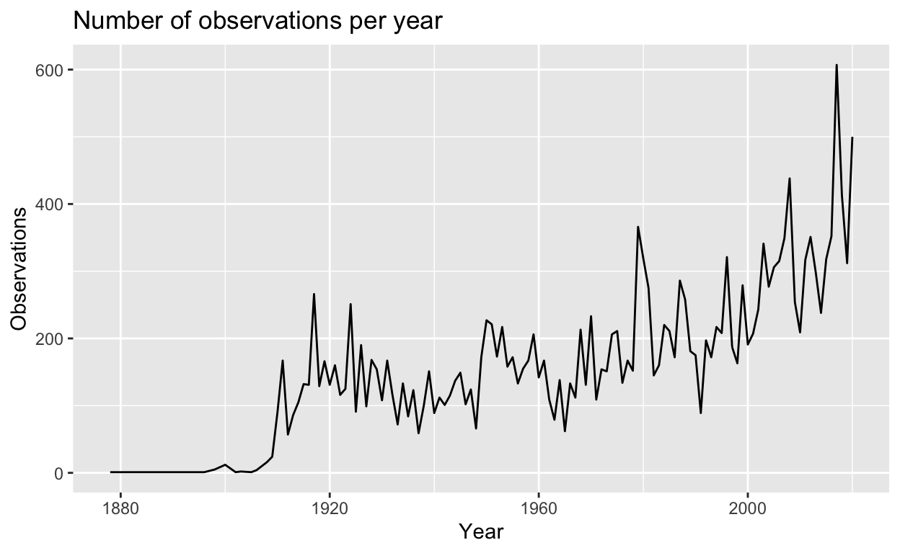
This graph does not prove that more fires are occurring every year because we do not know how accurate reporting is in the early 1900s. CAL FIRE has data set going back to 1950 but USFS has data from 1878 in here. The two years with the most amount of data is 2017 and 2020 which has had the worse fires in recent history.
STATE| states | Freq |
|---|---|
| AZ | 1 |
| CA | 21226 |
| NV | 73 |
| OR | 15 |
No fires that happened out of this state were under jurisdiction of Cal Fire which suggests these fires may have originated outside of California. These fires can be potentially misleading since the boundary can include both California and the other state. There is no way to determine what the boundary is for the California part of the fire.
AGENCY| agency | num_fires |
|---|---|
| USF | 9556 |
| CDF | 6563 |
| CCO | 3222 |
| NPS | 1011 |
| BLM | 652 |
| DOD | 163 |
| LRA | 111 |
| FWS | 22 |
| BIA | 12 |
| OTH | 1 |
Surprisingly the United States Forest Service has been in charge of more fires than CalFire. However, this is likely due to them reporting many smaller prescribed burns. I wonder who is in charge of more land, and how jurisdiction is delegated. Private (PVT) was an option in the official documentation but there appears to be no occurrences in this data set. It seems like the groups to pay the most attention to are BLM, CCO, CDF, LRA, NPS, and USF.
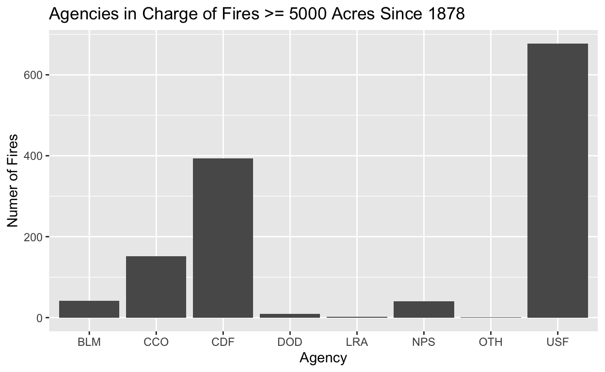
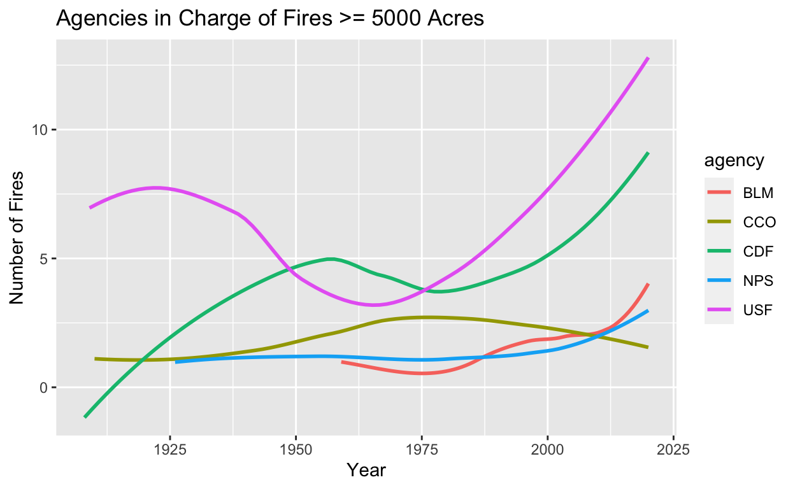
We continue to see that the National Park Service has jurisdiction over more large fires than CAL Fire. Despite the increase of fires in recent years, the number of contracted counties in charge of fires has decreased. However, the Bureau of Land Management and National Park Service have been increasing their aid in combating California Fires.
UNIT_ID
out_of_state_units <- fires %>%
select(state, unit_id) %>%
filter(state != "CA" & state != "" & !is.na(state) & unit_id != '') %>%
unique()
in_state_units <- fires %>%
select(state, unit_id) %>%
filter(state == "CA" & state != '' & !is.na(state) & unit_id != '') %>%
unique()
#See if there are any units belonging to both states
cross_state_units <- c()
for(row in 1:nrow(in_state_units)) {
unit <- in_state_units[row, "unit_id"]
if(sum(out_of_state_units[, "unit_id"] == unit) > 0) {
cross_state_units <- c(cross_state_units, unit)
}
}
cross_state_units_df <- fires %>%
filter(unit_id == cross_state_units & state != '' & !is.na(state)) %>%
select(state, agency, unit_id, gis_acres, fire_name) %>%
group_by(state, agency, unit_id) %>%
summarise(gis_acres_total = sum(gis_acres)) %>%
arrange(unit_id)
kable(cross_state_units_df, caption =
"The following units were responsible for fires in multiple states")
| state | agency | unit_id | gis_acres_total |
|---|---|---|---|
| CA | BLM | CCD | 1392.92076 |
| NV | BLM | CCD | 25.46643 |
| CA | USF | HTF | 26751.67800 |
| NV | USF | HTF | 14267.09300 |
| CA | USF | KNF | 235463.13349 |
| OR | USF | KNF | 476.97339 |
| CA | BLM | NOD | 18492.59674 |
| NV | BLM | NOD | 17.40460 |
| CA | USF | TMU | 3092.50918 |
| CA | USF | TOI | 18235.83105 |
| NV | USF | TOI | 10366.60557 |
The reason that there are some units in charge of fires in multiple states is because they belong to federal organizations like United States Forest Service or Bureau of Land Management.
calfire_units_biggest_fire <- fires %>%
filter(agency == "CDF" & !is.na(gis_acres)) %>%
group_by(unit_id) %>%
slice(which.max(gis_acres)) %>%
select(year, agency, unit_id, fire_name, gis_acres) %>%
arrange(desc(gis_acres)) %>%
head(n=10)
kable(calfire_units_biggest_fire, caption="CAL FIRE Units that Responded to the Top 10 Biggest Fires in California History")
| year | agency | unit_id | fire_name | gis_acres |
|---|---|---|---|---|
| 2018 | CDF | LNU | RANCH | 410202.47 |
| 2020 | CDF | SCU | SCU COMPLEX | 396399.00 |
| 2007 | CDF | SBC | ZACA | 240358.70 |
| 2018 | CDF | SHU | CARR | 229651.41 |
| 1977 | CDF | BEU | MARBLE-CONE | 173333.45 |
| 2007 | CDF | MVU | WITCH | 162070.47 |
| 2018 | CDF | BTU | CAMP | 153335.56 |
| 1990 | CDF | TGU | CAMPBELL | 131504.22 |
| 2020 | CDF | CZU | CZU LIGHTNING COMPLEX | 86553.46 |
| 1985 | CDF | SLU | LAS PILITAS | 84271.42 |
I would like to calculate the busiest years for each unit, however an accurate way of calculating this is stopping me. Factors to consider are center, spread, range, count, and max fires for each unit every year. I need a function that will return the hardest year based off this data.
FIRE_NAME#There's still other bad fire names in the data set
bad_fire_names <- c("UNKNOWN", "N/A", "", "UKNOWN", " ")
popular_fire_names <- fires %>%
filter(!is.na(fire_name)) %>%
subset(!(fire_name %in% bad_fire_names)) %>%
group_by(fire_name) %>%
count(name="count") %>%
arrange(desc(count)) %>%
head(n=10)
kable(popular_fire_names, caption="10 Most Popular Names for Fires")
| fire_name | count |
|---|---|
| CANYON | 45 |
| RIVER | 39 |
| LAKE | 37 |
| CREEK | 35 |
| COTTONWOOD | 33 |
| BEAR | 32 |
| RIDGE | 30 |
| RANCH | 28 |
| SPRING | 28 |
| PINE | 27 |
biggest_fire_names <- fires %>%
arrange(desc(gis_acres)) %>%
select(year, fire_name, gis_acres) %>%
head(n=5)
kable(biggest_fire_names, caption="Top 5 Biggest Fires in California History and their Names")
| year | fire_name | gis_acres |
|---|---|---|
| 2020 | AUGUST COMPLEX FIRES | 1032699.0 |
| 2002 | BISCUIT | 501082.0 |
| 2018 | RANCH | 410202.5 |
| 2020 | SCU COMPLEX | 396399.0 |
| 2020 | CREEK | 379882.2 |
[1] "A moment of condolences for anyone affected by the Camp Fire in Paradise or any other fire." fire_name year unit_id gis_acres alarm_date cont_date
1 CAMP 2018 BTU 153335.6 2018-11-08 2018-11-26Fire names are not unique and there are some fires that share the same name. There are many fire names that have been entered in incorrectly, that also contain back slashes or other gibberish.
ALARM_DATE
new_dates <- fires
new_dates$alarm_date <- as.Date(new_dates$alarm_date, "%Y/%m/%d")
new_dates$cont_date <- as.Date(new_dates$cont_date, "%Y/%m/%d")
busiest_days <- new_dates %>%
filter(!is.na(alarm_date)) %>%
group_by(alarm_date) %>%
summarise(num_fires = n(),
mean = mean(gis_acres),
median = median(gis_acres),
sd=sd(gis_acres)) %>%
arrange(desc(num_fires)) %>%
head(n=5)
kable(busiest_days, caption="Top 5 Number of Daily Fires Since 1878")
| alarm_date | num_fires | mean | median | sd |
|---|---|---|---|---|
| 2008-06-21 | 122 | 5178.631 | 245.33860 | 16386.395 |
| 1987-08-30 | 61 | 8144.967 | 1932.24430 | 13913.601 |
| 2003-09-03 | 56 | 515.189 | 58.68177 | 1629.138 |
| 2015-07-30 | 50 | 4250.587 | 389.58737 | 10438.913 |
| 1999-08-23 | 47 | 7053.712 | 1571.95800 | 19095.666 |
It is hard to imagine that 122 fires are logged on June 6 even if it is a summer day. Before I analyze more time’s, lets find out the meaning behind this. One explanation is it could be a bunch of controlled burns. Many of these did share the same inc_number. However, many had different names and containment dates. While the primary cause on July 30, 2015 for lots of fires was smoking, on July 6, 2008 it was just lots of lightning.
CONT_DATEformat <- "%Y/%m/%d %H:%M:%S %z"
longest_fires <- new_dates %>%
select(fire_name, alarm_date, cont_date, cause, objective) %>%
filter(!is.na(alarm_date) & !is.na(cont_date)) %>%
mutate(fire_duration =
difftime(cont_date, alarm_date, format, units="days")) %>%
arrange(desc(fire_duration)) %>%
head(n=10)
kable(longest_fires, caption="Longest Lasting Fires in California History Since 1878")
| fire_name | alarm_date | cont_date | cause | objective | fire_duration |
|---|---|---|---|---|---|
| PIUTE | 1990-08-13 | 1999-09-14 | 1 | 1 | 3319 days |
| RALSTON | 2006-09-05 | 2007-09-17 | 9 | 1 | 377 days |
| WESTLAKE | 2006-07-08 | 2007-07-09 | 2 | 1 | 366 days |
| LAVAL | 2012-06-03 | 2013-06-03 | 14 | 1 | 365 days |
| GORGE | 2018-08-19 | 2019-08-19 | 14 | 1 | 365 days |
| PANTHER | 2013-05-01 | 2013-12-09 | 9 | 1 | 222 days |
| POWERHOUSE | 2013-05-30 | 2013-12-18 | 9 | 1 | 202 days |
| LAKE | 2015-06-17 | 2015-12-31 | 9 | 1 | 197 days |
| ROSASCO | 2019-05-23 | 2019-12-02 | 9 | 1 | 193 days |
| PONY | 2016-06-07 | 2016-12-15 | 1 | 1 | 191 days |
In the data set there are some alarm_dates and cont_dates entered incorrectly, like the cont_date occurring before the alarm_date. Hence, there is a possibility that these results have also been entered in incorrectly. The reason that some of these fires last so long, is that fire responders allow it, because it is in a rural area and fires can be beneficial. The cause for most of these fires is lightning, unknown, or miscellaneous.
[1] “Fire Duration (Hours) Summary Statistics” Min. 1st Qu. Median Mean 3rd Qu. Max. 24 24 72 368 288 8760
A problem is that there are so many missing values in cont_date there are very few fires you can find the fire duration for relative to the whole data set. Among those available, there is a huge variance in the duration of fires. These shorter lasting fires are not just prescribed burns and have many different causes.
CAUSE| cause | string_cause | avg_size | count |
|---|---|---|---|
| 4 | Campfire | 3530.47878 | 380 |
| 1 | Lightning | 2969.34811 | 3454 |
| 16 | Aircraft | 2474.22459 | 14 |
| 9 | Miscellaneous | 2285.43451 | 3379 |
| 7 | Arson | 2200.11588 | 903 |
| 10 | Vehicle | 1534.41743 | 454 |
| 14 | Unknown/Unidentified | 1496.36036 | 9541 |
| 2 | Equipment Use | 1460.92934 | 1246 |
| 11 | Power Line | 1274.56765 | 412 |
| 6 | Railroad | 1169.29763 | 80 |
| 3 | Smoking | 1048.65940 | 342 |
| 13 | Non-Firefighter Training | 1013.68027 | 11 |
| 5 | Debris | 875.22631 | 723 |
| 8 | Playing with Fire | 657.54545 | 196 |
| 18 | Escaped Prescribed Burn | 623.48734 | 90 |
| 12 | Firefighter Training | 594.01999 | 5 |
| 15 | Structure | 391.06574 | 21 |
| 19 | Illegal Alien Campfire | 83.46374 | 17 |
As I previously mentioned, the reason some fires duration is so long is because they are in remote areas and allowed to continue to burn. Despite this, human induced fires like campfires, still produce bigger fires on average than nature induced fires like lightning. In the next sections we will explore if certain causes of fires are becoming more or less frequent.
COMMENTS
The max length of a comment is 260 characters, comments are longer but they are cut off by an * indicating there is more to that comment somewhere. By reading comments interesting ones to me were “The cause was target shooting”, “… Total Cost 18,600,600”, “Children playing with fire”, and names of people. Most of the comments in the data set are empty.
GIS_ACRES| year | gis_acres | square_miles |
|---|---|---|
| 2020 | 4159334.0 | 6498.959 |
| 2018 | 1590431.2 | 2485.049 |
| 2017 | 1424559.4 | 2225.874 |
| 2008 | 1382462.2 | 2160.097 |
| 2007 | 1040224.3 | 1625.350 |
| 2003 | 970479.3 | 1516.374 |
| 2002 | 963898.5 | 1506.091 |
| 1987 | 862910.9 | 1348.298 |
| 2012 | 847714.6 | 1324.554 |
| 1999 | 801137.0 | 1251.777 |
For reference 500,000 acres is equal to 780 square miles, a square mile being a square with each side being 1 mile in length!!! The size of Yosemite national park is 1169 square miles, and the size of New York is 302 square miles.
[1] "Number of fire reports where the difference between report_ac and gis_acres is greater than 100: 1250"There are many differences between REPORT_AC and GIS_ACRES. Many of the discrepancies come from the 2000s as well so it is not the fault of the older data. There is less missing data for GIS_ACRES so we will primarily be depending on this. There is the possibility of using REPORT_AC data if GIS_ACRES is missing and vice versa.
C_METHOD
#Collection methods
first_yr_c_method <- fires %>% select(year, c_method) %>%
drop_na() %>% arrange(year) %>% head()
total_c <- table(fires$c_method)
labels <- c("GPS Ground", "GPS Air", "Infared", "Other Imagery",
"Photo Interpretation", "Hand Drawn", "Mixed Collection Tools",
"Unknown")
df <- data.frame(Method = labels, count = as.vector(total_c))
df <- arrange(df, desc(count))
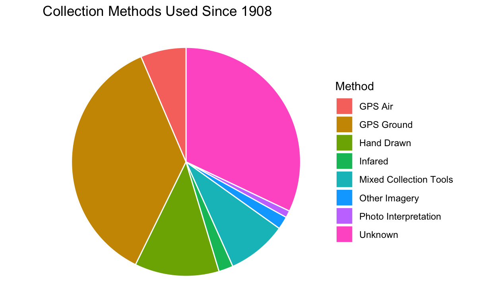
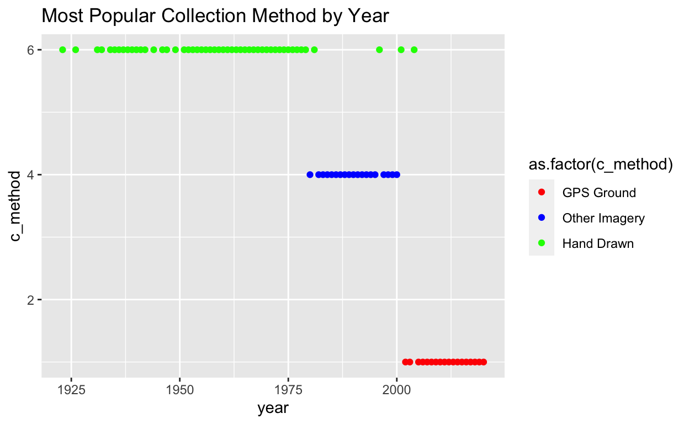
Here we can see the transition of the most frequently used collection method as time goes on.
OBJECTIVE| year | fire_name | gis_acres | cause | objective |
|---|---|---|---|---|
| 2020 | AUGUST COMPLEX FIRES | 1032699.0 | 1 | 1 |
| 2002 | BISCUIT | 501082.0 | 1 | 1 |
| 2018 | RANCH | 410202.5 | 14 | 1 |
| 2020 | SCU COMPLEX | 396399.0 | 1 | 1 |
| 2020 | CREEK | 379882.2 | 14 | 1 |
| year | fire_name | gis_acres | cause | objective |
|---|---|---|---|---|
| 2008 | CLOVER | 15788.590 | 1 | 2 |
| 2008 | TEHIPITE | 11648.092 | 1 | 2 |
| 1977 | FERGUSON | 10421.790 | 1 | 2 |
| 2005 | COMB | 9756.467 | 1 | 2 |
| 2010 | SHEEP COMPLEX | 9021.522 | 1 | 2 |
As we saw previously with the longest lasting fires in recent history most of them originated from wildfires. It is interesting that the cause of the biggest prescribed fires have all been lightning. In fact, there are no prescribed burns that do not originate from lightning in this data set that has GIS_ACRES data.
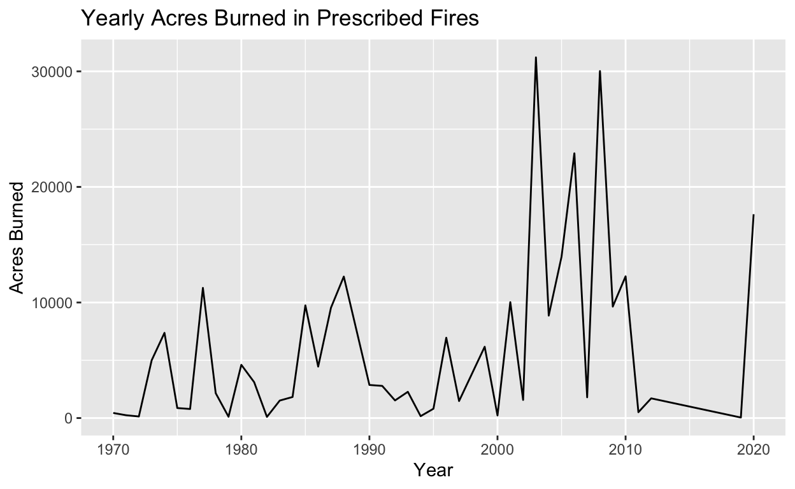
The number of acres burned in prescribed burns has never been lower until this last decade. At the same time, California has experienced some of the worst fires in the last decade. While correlation does not prove causation, poor fire management in the off season may explain the recent surge in fires.
# Number of acres burned 2010-2020
decade_fires <- fires %>% select(year, gis_acres) %>%
filter(year >= "2010" & !is.na(gis_acres))
decade_fires_sum <- decade_fires %>% group_by(year) %>%
summarise(gis_acres = sum(gis_acres))
decade_fires_sum$gis_acres <- as.integer(decade_fires_sum$gis_acres)
ggplot(decade_fires_sum, aes(x=year, y=gis_acres)) +
geom_bar(stat="identity", fill="gray70") +
geom_text(aes(label=gis_acres)) +
xlab("Years") + ylab("Acres Burned") +
ggtitle("Number of Acres Burned 2010-2020")
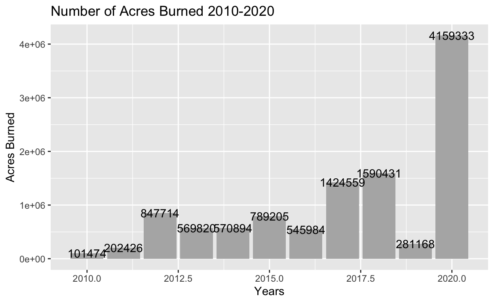
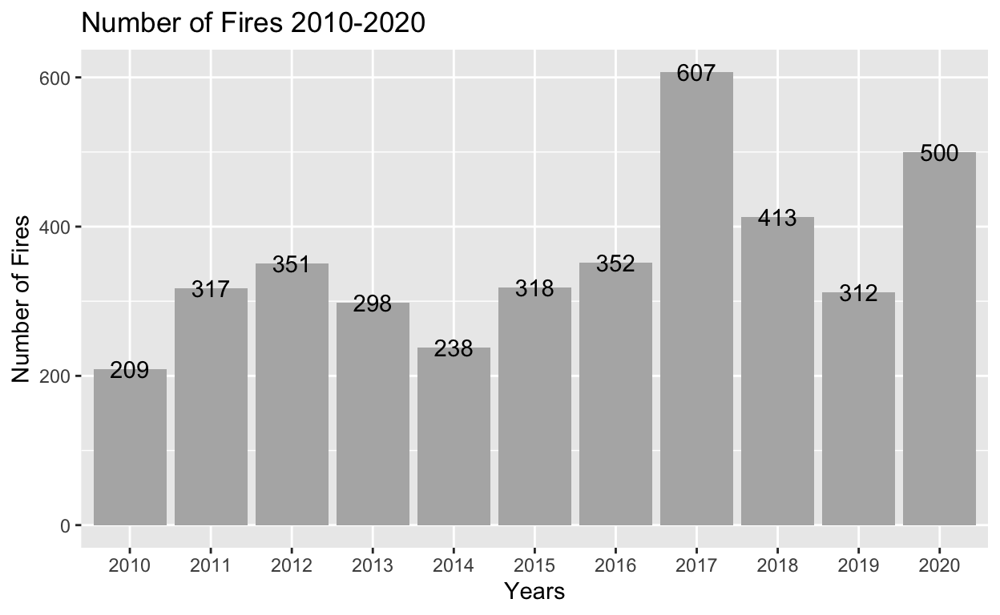
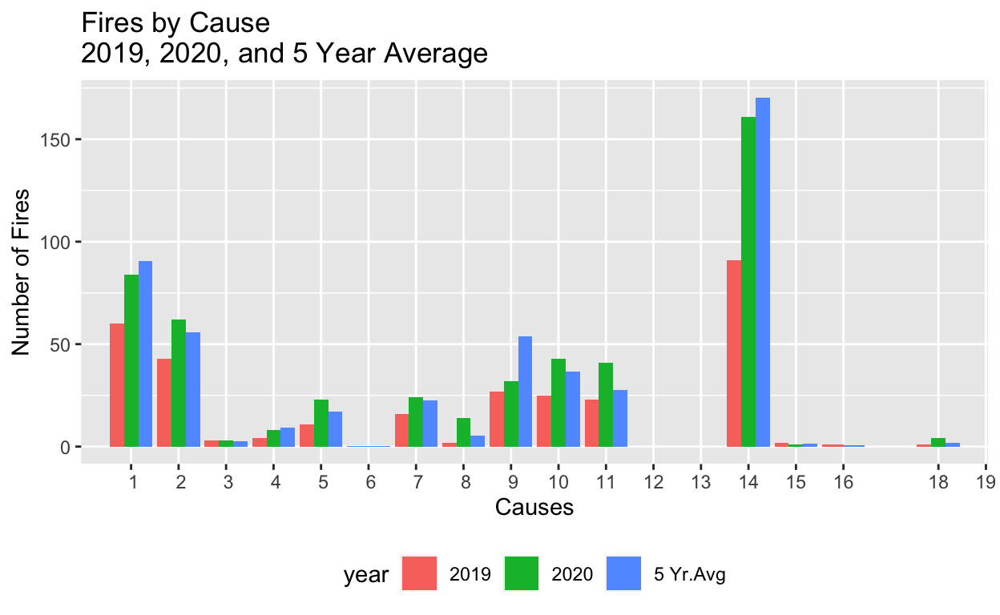
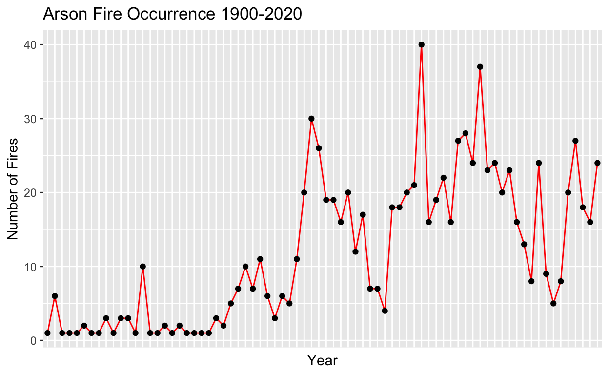
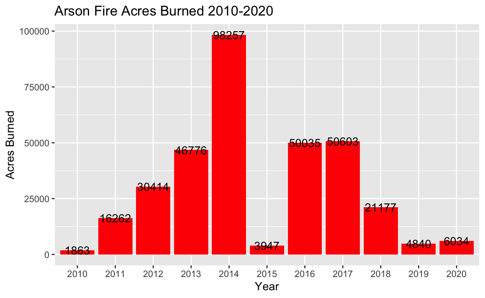
Arson does not have much statistical analysis, it is just surprising how much land is burned every year due to this crime.
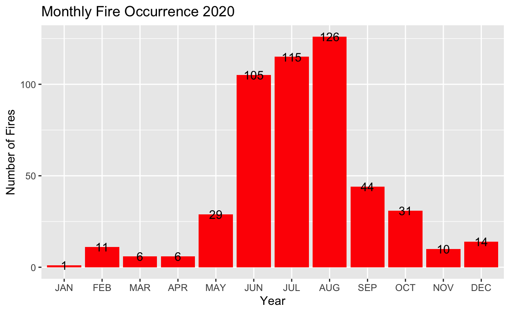
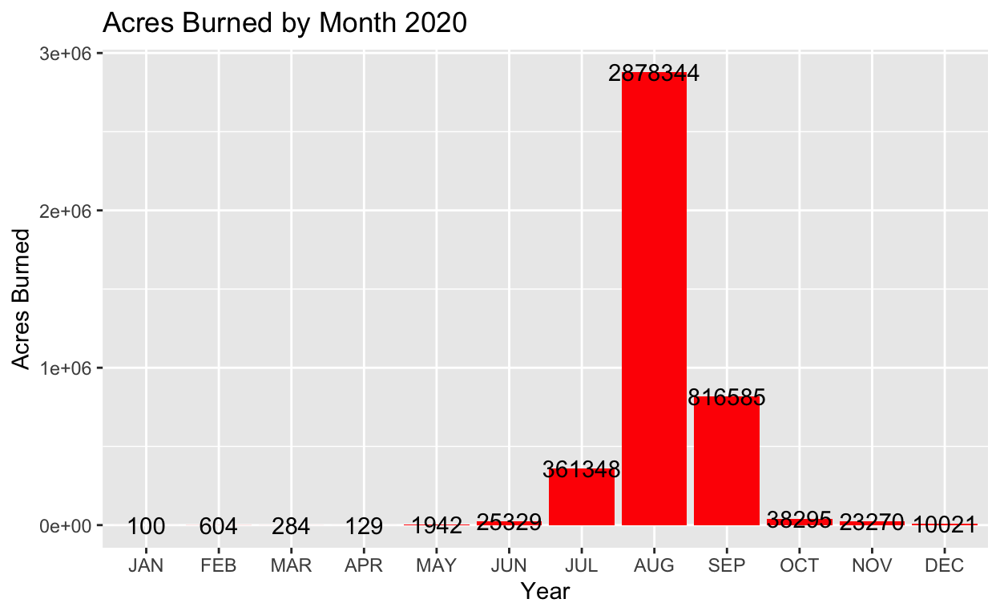
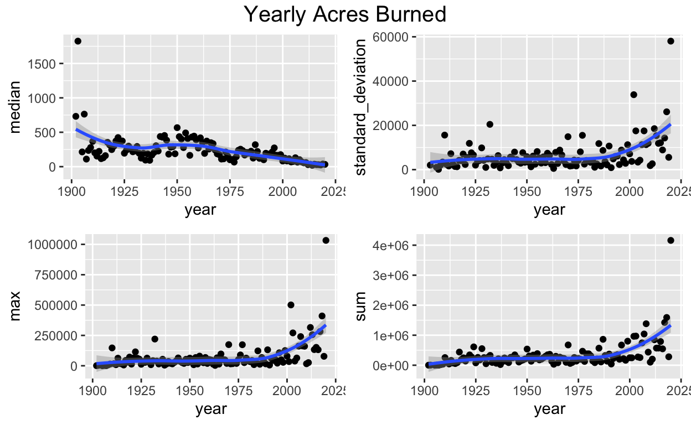
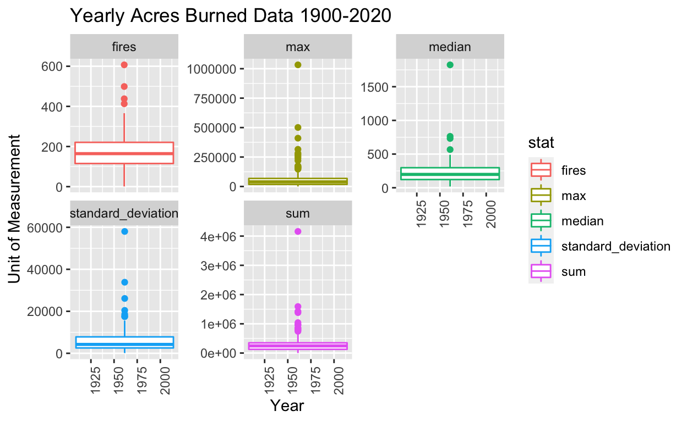
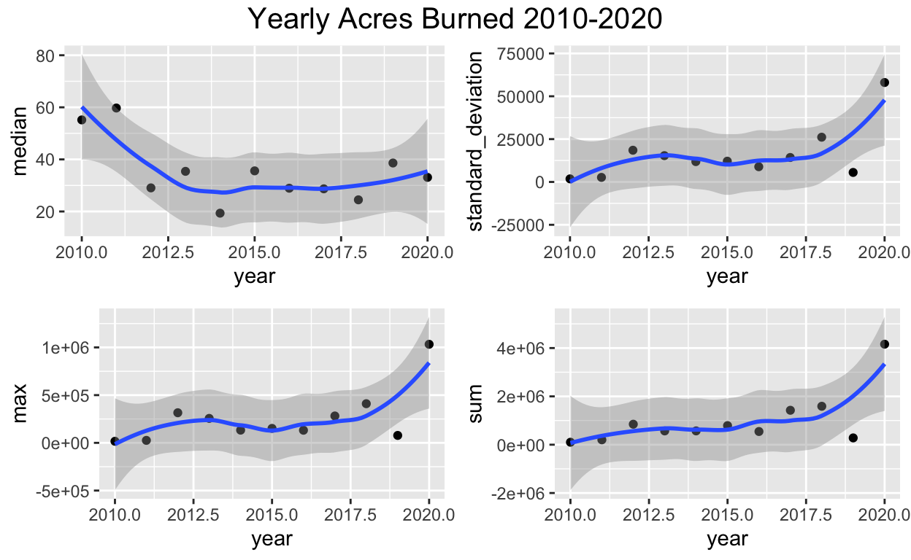
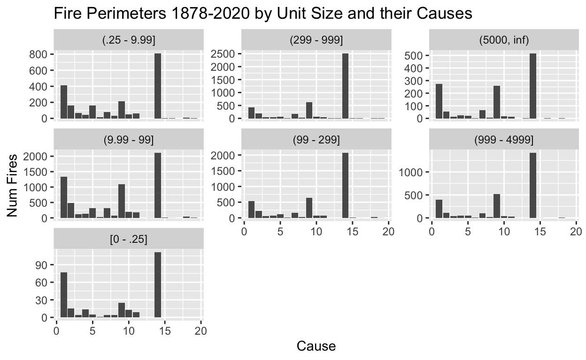
The biggest discovery is that the number of prescribed burns has never been lower from 2010-2020 in recent California Fire History. This may be cause for why we have seen such a big spike in fires in recent history. Also, R’s ggplot makes it extremely difficult to customize your graph.